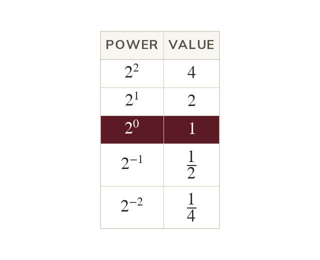
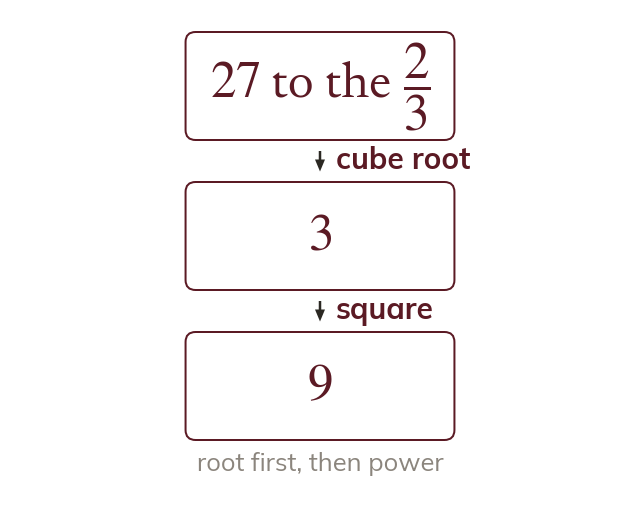
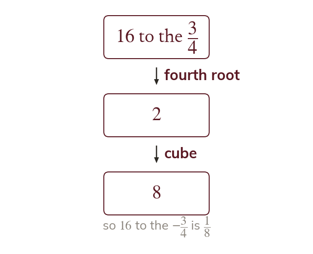
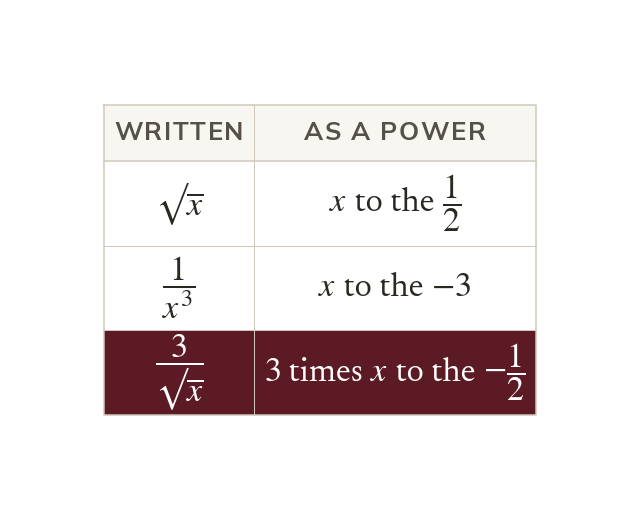
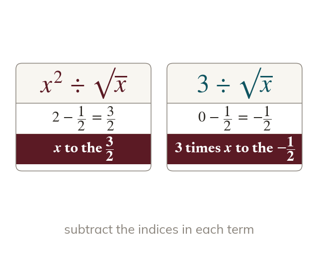
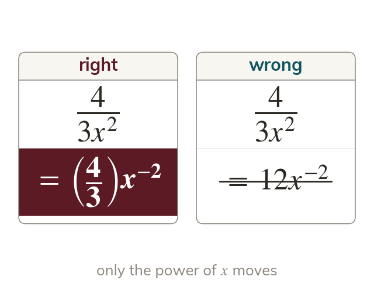

Zero and negative powers
Each step down the table divides by so and
A negative index means the reciprocal,
Differentiation and integration in chapters and need every term written as a power of , roots and reciprocals included. The next lesson works with surds, the exact roots that these powers often leave.
Work down the page at your own pace. Write every answer in your book first, then click to check it.
Read each card, then follow the worked examples one step at a time.

Each step down the table divides by so and
A negative index means the reciprocal,

In an index m/n, the denominator is a root and the numerator is a power. So is the cube root of squared, which is

Deal with the minus sign by taking the reciprocal, then take the root and the power. So
Pick an answer. If it's wrong, the feedback tells you which mistake it was.
Write the blanks in your book first, then tap each one to check.
Read each card, then follow the worked examples one step at a time.

and so roots and reciprocals become powers of Then the index laws apply as before.

To write as powers of divide each term by Subtract the indices in each term.

In only the moves up, so it becomes
The stays in the denominator as a number.
Pick an answer. If it's wrong, the feedback tells you which mistake it was.
Write the blanks in your book first, then tap each one to check.
Finished? Next lesson: 12.P1.5 Simplifying and Expanding Surds.
For each skill, tap the one that is true for you today. Your Revise pages start with anything you mark Not yet.
Your ratings are saved on this device only.
Log in, then search for a code to practise that skill.